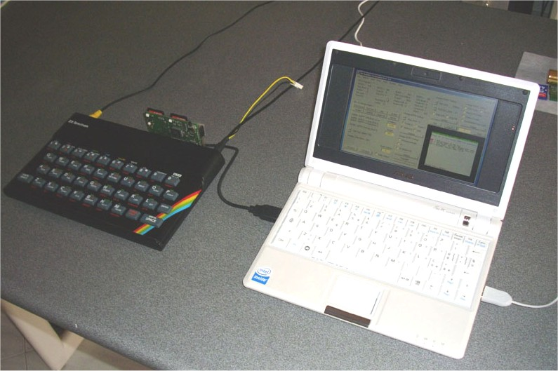
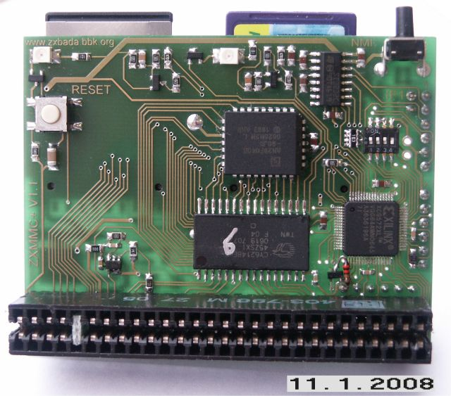
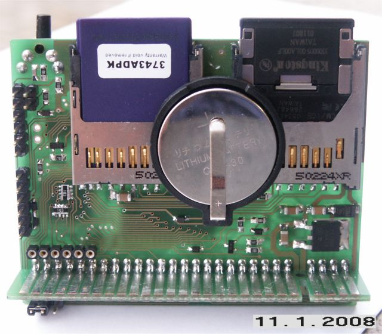

The ZXMMC+ HomePage
The ZXMMC+ plugs into the edge connector of a ZX-Spectrum providing sd-card access, IF-1 compatible RS-232 and Network communication, 1MB ram/rom, Kempston joystick.
Technical specs:

EeePC running the ZX-Com program (see the software section) connected to a 48K ZX-Spectrum
28/06/2009 New ResiDos 2.21 successfully tested. It solves issues about hook errors on certain programs such as monitors/debuggers.
11/01/2009 NMI handling patch modified for compatibility reasons: three bytes are no longer changed in the NMI handler. See the software page.
10/01/2009 BootRom firmware V2.21e released: real execution FastPage register can now be edited by ZX-Com. Snapshot may be set for NO-fastpage restore.
29/08/2008 An USB adaptor has been developed by Pino Giaquinto. It allows USB communication between a ZX-Spectrum and a Windows-based PC when a RS-232 port is not available. The author obtained an unique ID from the USB chip manufacturer for this device, so "ZXMMC+ COMx" will appear in Windows Device Manager.
The V1.1 pcb has been assembled and tested. Changes from V1.0 are listed here:
- The Clock signal
amplifier/cleaner is now on-board
- The Reset signal provided on Edge Connector goes through a
diode/resistor to prevent device latch-up
- A pullup resistor has been added on the ROM chip select
signal.
- Reset button moved closer to the top side, to avoid mechanical
problem with 48K+ and 128K machines
- Reset circuitry modified for improved reliability on certain
Spectrum models
The clock amplifier included on V1.1 still requires a little change: due to different placement of the comparator, which is now on the opposite side of pcb (while the patch pcb required by previous version was glued directly on top of cpld chip), a fast transistor with pullup should be added. Being a small change, this can be done without any patch pcb. The picture on the left shows the small 1/8W resistor and an additional sot23 transistor, below the cpld chip, on the lower right side of the pcb.
 
This VIDEO (warning: 27MB) shows the ZXMMC+ (V1.0) under test with a few ROMs and ResiDOS with an early bootrom release.
Technical Description Hardware Details Software QuickStart Schematic PCB Contact the Author